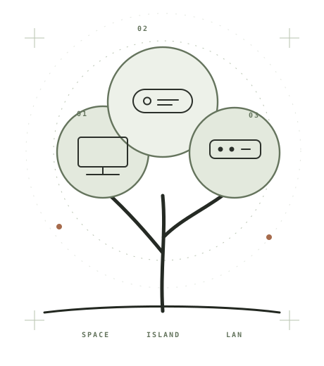

ZI / SPACEPROJECT DEMO · 00:08
ZI STUDIO / 独立数字工具工作室EST. 2026 / 独立工作室

01 / PRODUCTS
先看产品。
每一件都从一个真实的使用场景出发，长出自己的形状。
THREE PRODUCTSONE FAMILY ↗
CONCEPT VISUAL / 非应用截图
Now playingOne quiet moment
10:08 MON / 19 OCT
ZI / ISLANDINTERACTION CONCEPT
CONCEPT VISUAL / 非应用截图
ZI / LANMENU BAR CONCEPT
ZiSpace 播放项目自有的 8 秒演示素材；ZIsland 与梓栏画面为此页绘制的视觉概念，不能代表当前应用界面或已完成的功能。
02 / IDENTITY一个名字，
一个名字，
容纳不同作品。
01 / WORDMARKZI → 梓

拼音 zi网站字标 / 产品署名
从拼音开始，
让名字可以走得更远。
小写 zi 让名字在不同语言里都容易阅读，对应中文「梓」。主图形从层层展开的轮廓出发，呼应「梓」的生长感。产品各有不同轮廓，统一使用克制的线条与留白。
Paper
#F3EFE5Ink
#24231FSage
#64745DCopper
#A66B4C纸色与墨色负责阅读，鼠尾草绿增加温度，铜色只点到识别与状态。产品画面保留自己的颜色。
02B / APP ICONS · 图标概念
独立图形，同一家族。
四枚图形共用线宽、圆角与开放端点。产品拥有自己的轮廓，不再使用首字母充当图标。
线性图标为视觉方向稿，尚未替换应用资源。
03 / A SYSTEM THAT GROWS
名字可以继续长。
Zi 是系列总名。每个产品有自己的任务与视觉，而不是把所有工具做成同一种样子。
NOW / 01—03ZiSpace · ZIsland · Zilan
FUTURE / NAMING ONLYZiNote · ZiFlow · ZiCast命名示例，尚未立项